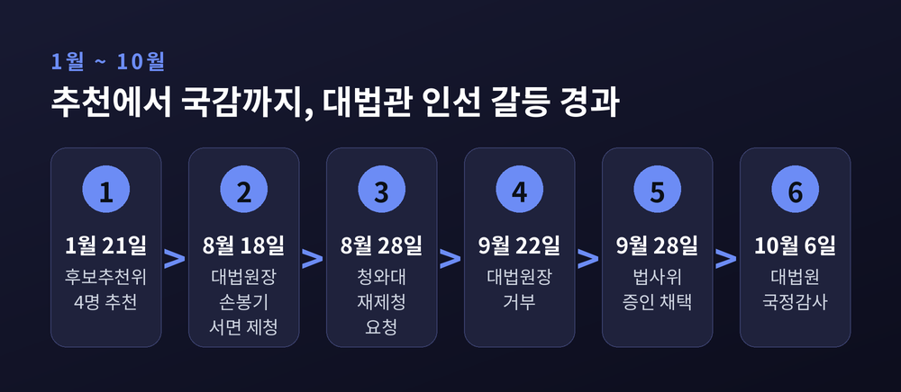
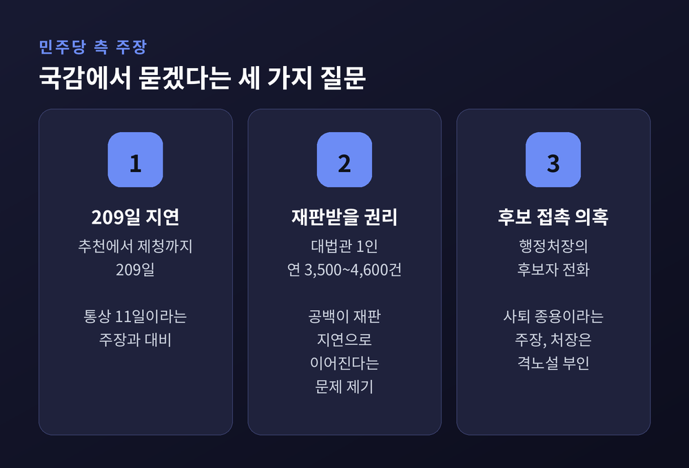
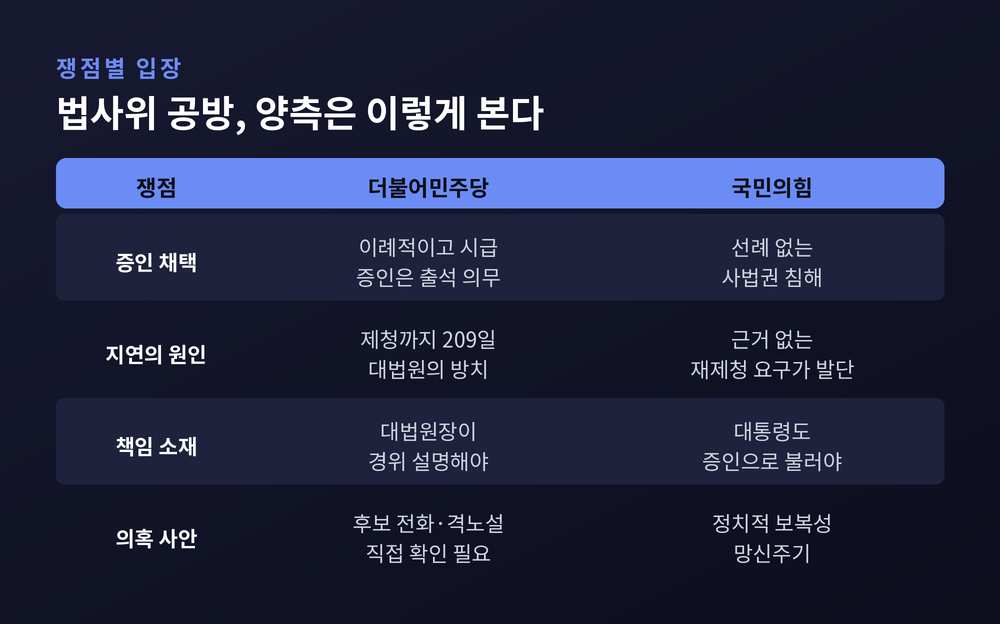
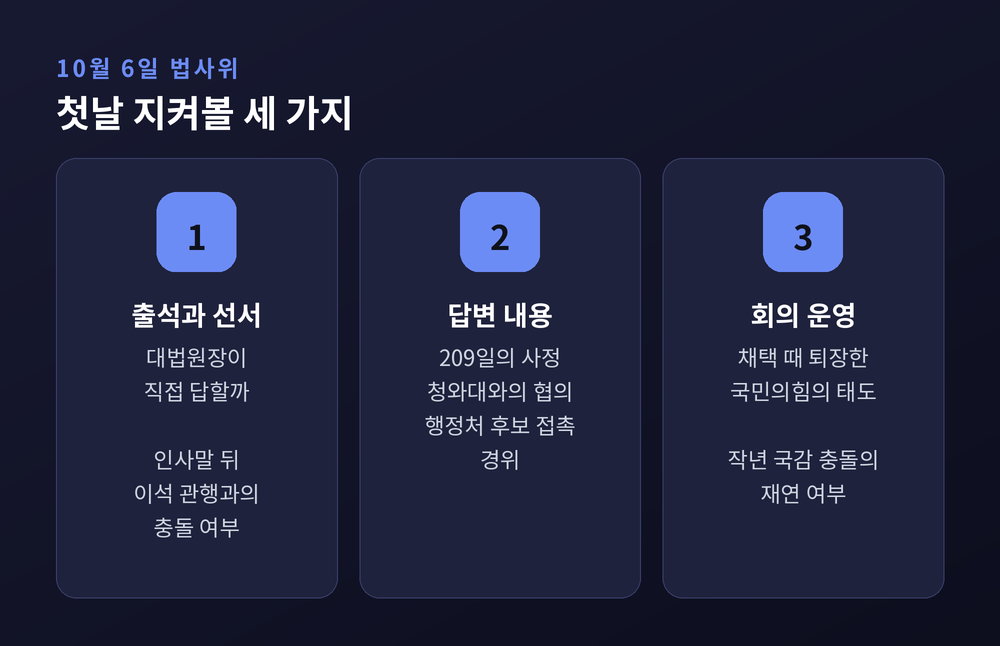
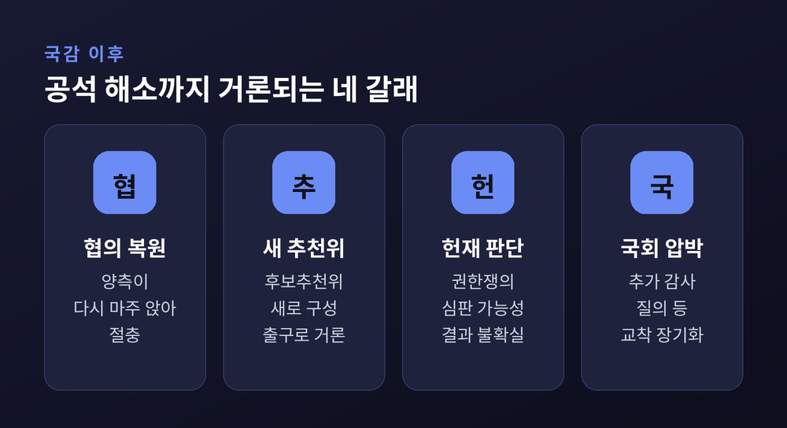

이번 글에서는 10월 6일 국정감사 첫날 법제사법위원회에서 맞붙을 '재제청 거부' 공방을 정리해 보겠습니다. 이미 한 차례 다룬 인선 갈등 자체보다, 대법원장을 증인석에 세우는 문제를 두고 여야가 무엇을 다투는지에 초점을 맞춥니다. 정치적으로 민감한 사안이어서 양측 주장을 나란히 적겠습니다.
세 줄 요약
대법관은 헌법 제104조 제2항에 따라 대법원장의 제청으로 국회의 동의를 얻어 대통령이 임명합니다. 노태악 대법관 후임으로는 1월 21일 후보추천위원회가 4명을 추천했습니다. 노 대법관은 3월 3일 퇴임했습니다.
조 대법원장은 8월 18일 손봉기 대구지법 부장판사를 서면으로 제청했습니다. 추천 이후 209일이 지난 시점이었습니다. 청와대는 열흘 뒤인 8월 28일 손 후보자의 임명동의안을 국회에 내지 않기로 하고 재제청을 요청했습니다. 이유는 "절차적 완결성"이 부족하고 실질적 협의가 없었다는 것이었습니다.
9월 22일 조 대법원장은 "재제청 요청에 응할 수 없다"고 밝혔습니다. 요청 문서에 "구체적인 사유와 헌법적 근거"가 적혀 있지 않다는 이유였습니다. 청와대는 제청권이 임명권보다 우위에 있다는 인식은 헌법에 위배된다고 반박했습니다.

핵심은 대법원장을 어떤 자격으로 부르느냐입니다.
법사위는 9월 21일 전체회의에서 10월 6일부터 27일까지 22일간 82개 기관을 감사하는 계획서를 가결했습니다. 서영교 위원장은 국회법 제121조 제5항에 따라 조 대법원장에게 10월 6일, 김상환 헌법재판소장에게 10월 13일 출석을 요구하겠다고 밝혔습니다. 여기까지는 기관장 출석이어서 큰 논쟁이 없었습니다.
달라진 것은 9월 28일입니다. 법사위가 조 대법원장을 '일반증인'으로 채택했습니다. 서 위원장은 "국감 증인 출석을 요구받은 사람은 의무적으로 출석하게 법으로 돼 있고, 출석하지 않을 경우 처벌하는 조항까지 있다"고 말했습니다. 일반증인은 선서를 하고 답변해야 한다는 점에서 기관장 출석과 무게가 다릅니다.
예전에는 대법원장이 인사말을 마치고 자리를 떠나면 법원행정처장이 답하는 것이 관행이었습니다. 지금은 그 관행의 경계가 시험대에 올랐습니다. 뉴스1은 1988년 이후 행정처장이 답변하는 방식이 자리 잡았다고 정리했습니다.
작년의 기억도 겹쳐 있습니다. 2025년 10월 13일 국감에서는 당시 법사위원장이 대법원장의 이석을 막아 약 90분간 자리를 지키게 했고, 여야가 격하게 충돌했습니다. 올해 공방이 더 날카로운 이유입니다.
민주당 쪽 주장은 크게 세 가지로 나뉩니다.
첫째는 시간입니다. 서 위원장은 추천위 구성부터 후보 추천까지 보통 11일이 걸리는데 대법원은 209일을 흘려보냈다고 주장합니다. 오마이뉴스도 윤석열 정부 시절 세 차례의 제청이 평균 11일, 대면으로 이뤄졌다고 전했습니다.
둘째는 국민의 재판받을 권리입니다. 김민석 대표는 10월 2일 "대법관 공백 현상으로 인해 국민의 재판 받을 권리도 침해되고 있다"고 했습니다. 서울신문 보도에는 대법관 1인이 연간 3,500~4,600건을 처리한다는 수치가 나옵니다.
셋째는 의혹 규명입니다. 노경필 법원행정처장이 대법관 후보자들에게 일일이 전화한 일을 두고 서 위원장은 "사퇴 종용이나 다름없다"고 했습니다. 박성준 수석대변인 등은 법원행정처가 재제청을 수용하자고 건의했는데 조 대법원장이 격노하며 묵살했다는 의혹도 제기했습니다.
다만 이 두 의혹은 아직 의혹 단계입니다. 노 처장은 "그런 말씀을 한 적이 없다. 화를 내신 적이 없다"고 부인했습니다.

국민의힘의 반박도 선명합니다.
윤상현 의원은 사법부 수장이 헌법상 권한으로 대법관을 제청한 일을 두고 증인석에 세워 심문하겠다는 것은 사법부 권한을 침해하는 일이라고 말했습니다. 김태규 의원은 "대법원장을 불러 신문하는 선례는 없었다"고 했습니다. 박형수 의원은 앞서 이를 "정치적 보복성 망신주기"라고 불렀습니다.
문제의 원인이 어디 있느냐를 두고도 시각이 다릅니다. 윤 의원은 헌법적 근거와 사유도 없는 재제청을 요구한 쪽이 이재명 대통령이라며, 증인이 필요하다면 대통령이 먼저라고 주장했습니다. 국민의힘은 운영위에서 김현지 청와대 제1부속실장의 출석도 요구하고 있습니다.
정리하면 같은 사건을 두고 책임의 출발점을 다르게 보는 셈입니다. 민주당은 지연과 거부를, 국민의힘은 근거 없는 재제청 요구를 먼저 봅니다.

학계 시각도 한쪽으로 모이지 않습니다.
조재현 동아대 교수는 제청권과 임명권, 국회의 동의권이 모두 헌법이 부여한 독립적 권한이어서 어느 하나가 다른 권한에 종속된다고 보기 어렵다고 했습니다. 차진아 고려대 교수는 대법원장의 제청이 사법부 독립을 보장하는 장치라는 점을 강조했습니다.
반면 경향신문이 전한 한 변호사는 헌법재판소가 대법원장의 손을 들어주기 어려울 것이라고 봤습니다. '실질적 임명권'이라는 해석이 우세하다는 이유입니다. 임지봉 서강대 교수는 법적 판단을 기다리기보다 양 기관이 정치적으로 타협해야 한다고 했습니다.
헌법에 제청 반려와 재제청 절차가 명문으로 없다는 점은 양측이 모두 인정하는 대목입니다. 그래서 같은 조문을 두고도 결론이 갈립니다.
헤럴드경제 일정표에 따르면 법사위는 6일 대법원과 법원행정처, 8일 법무부, 13일 공수처를 감사합니다. 첫날의 변수는 크게 셋입니다.

국감이 끝난다고 문제가 풀리지는 않을 전망입니다. 새 후보추천위 구성이 현실적 출구로 거론되지만, 어느 쪽도 먼저 물러서지 않는 한 공석은 이어집니다. 학계가 거론한 권한쟁의심판은 시간이 오래 걸리고 결과를 가늠하기 어렵다는 평가입니다.

끝으로 한 마디만 더 드리겠습니다.
이번 국감은 대법관 한 자리를 누가 어떻게 채우느냐를 넘어, 국회의 감사권과 사법부 독립의 경계를 가늠하는 자리가 될 것입니다. 민주당은 국민 앞에 설명하라고 하고, 국민의힘은 선을 넘지 말라고 합니다. 양쪽 모두 헌법을 말하고 있습니다.
"권한의 경계는 싸움이 아니라 설명으로 그어진다."
설명이 오가는 자리가 될지, 다시 공방만 남을지는 6일 법사위의 풍경이 먼저 보여 줄 것입니다. 그 장면을 차분히 지켜보시길 권합니다.